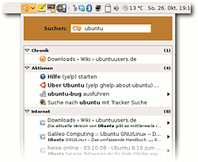
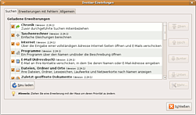

Deskbar
Archivierte Anleitung
Dieser Artikel wurde archiviert, da er - oder Teile daraus - nur noch unter einer älteren Ubuntu-Version nutzbar ist. Diese Anleitung wird vom Wiki-Team weder auf Richtigkeit überprüft noch anderweitig gepflegt. Zusätzlich wurde der Artikel für weitere Änderungen gesperrt.
Zum Verständnis dieses Artikels sind folgende Seiten hilfreich:
Deskbar  ist kein eigenständiges Programm, sondern ein so genanntes Applet für das Panel der Desktopumgebung GNOME. D.h. man findet das Programm nicht in den Anwendungs-Menüs, sondern muss es selbst zum Panel hinzufügen.
ist kein eigenständiges Programm, sondern ein so genanntes Applet für das Panel der Desktopumgebung GNOME. D.h. man findet das Programm nicht in den Anwendungs-Menüs, sondern muss es selbst zum Panel hinzufügen.
Über das Deskbar-Applet lassen sich verschiedene Suchen aus einer zentralen Stelle heraus ausführen. So können beispielsweise Desktop-Suchmaschinen wie Tracker, Beagle oder Strigi aus dem Panel heraus genutzt oder Suchanfragen via Internet über Google oder Yahoo ausgelöst werden.
Durch weitere Module können über das Deskbar-Applet auch Nachrichten an so genannte Mikro-Blogging-Dienste wie twitter.com oder identi.ca  geschickt werden.
geschickt werden.
Installation¶
Das Deskbar-Applet nicht vorinstalliert. Möchte man das Applet nutzen, so kann man es bis einschließlich Ubuntu 11.04 über das folgende Paket nachinstallieren:
deskbar-applet (universe)
 mit apturl
mit apturl
Paketliste zum Kopieren:
sudo apt-get install deskbar-applet
sudo aptitude install deskbar-applet
Die Unterstützung für weitere Desktopsuchmaschinen lassen sich durch folgende Pakete installieren:
libdeskbar-tracker (für die Desktopsuchmaschine Tracker, in Lucid in universe)
deskbar-plugins-strigi (universe, für die Desktopsuchmaschine Strigi)
deskbar-plugins-pinot (universe, für die Desktopsuchmaschine Pinot
)
mit apturl
Paketliste zum Kopieren:
sudo apt-get install libdeskbar-tracker deskbar-plugins-strigi deskbar-plugins-pinot
sudo aptitude install libdeskbar-tracker deskbar-plugins-strigi deskbar-plugins-pinot
Außerdem kann man noch folgende Pakete installieren. Durch sie lassen sich noch zusätzliche Dienste oder Anwendungen durchsuchen.
devhelp (GNOME Devhelp
durchsuchen)python-simplejson (universe, wird benötigt, um über das Deskbar-Applet Google durchsuchen zu können)
mit apturl
Paketliste zum Kopieren:
sudo apt-get install devhelp python-simplejson
sudo aptitude install devhelp python-simplejson

Benutzung¶
Üblicherweise findet man das Applet in der rechten Ecke des oberen Panels. Klickt man mit  auf das Applet, so klappt ein Fenster herunter, in dem man den gewünschten Suchbegriff eingeben kann. Nach Eingabe des Begriffes drückt man einfach nur noch auf
⏎ und die Suche beginnt.
auf das Applet, so klappt ein Fenster herunter, in dem man den gewünschten Suchbegriff eingeben kann. Nach Eingabe des Begriffes drückt man einfach nur noch auf
⏎ und die Suche beginnt.
Alternativ zum -Klick auf das Applet kann man auch die Tastenkombination
Alt +
F3 drücken. Bei Bedarf lässt sich diese Tastenkombination in den Eigenschaften des Applets ändern.
Eigenschaften¶

Über einen  -Klick auf das Applet und den Menüpunkt "Eigenschaften" gelangt man in die Einstellungen des Deskbar-Applets. Hier lassen sich Plugins aktivieren bzw. ungewünschte Plugins auch wieder deaktivieren. Manche Plugins - wie die für Twitter und Identi.ca - müssen hier auch erst eingerichtet werden, da die benötigten Zugangsdaten eingetragen werden müssen.
-Klick auf das Applet und den Menüpunkt "Eigenschaften" gelangt man in die Einstellungen des Deskbar-Applets. Hier lassen sich Plugins aktivieren bzw. ungewünschte Plugins auch wieder deaktivieren. Manche Plugins - wie die für Twitter und Identi.ca - müssen hier auch erst eingerichtet werden, da die benötigten Zugangsdaten eingetragen werden müssen.
Plugins, die noch zusätzliche Pakete aus der Paketverwaltung benötigen, sind in dem Reiter "Erweiterungen mit Fehlern" aufgeführt. Im unteren Abschnitt werden zusätzliche Informationen ausgegeben was benötigt wird, damit diese Plugins aktiviert werden können.
Integration von Tracker auf 64-Bit-Systemen¶
Die Installation vom Paket libdeskbar-tracker schlägt auf 64-Bit-Systemen fehl. Die Paketverwaltung meldet, dass das Paket nicht existiert. Das GNOME-Projekt bietet jedoch das Plugin für Deskbar als Download aus dem Subversion-Repository an. Die folgenden Befehle laden die aktuelle Version herunter und speichern sie im richtigen Verzeichnis.
1 2 | $ cd /usr/lib64/deskbar-applet/modules-2.20-compatible
$ sudo wget http://svn.gnome.org/svn/tracker/trunk/python/deskbar-handler/tracker-module.py -O deskbar-tracker.py
|
Anschließend muss nur noch in den Deskbar-Einstellungen die gewünschte Plugin-Funktion aktiviert werden (Live- oder normale Suche).
- Erstellt mit Inyoka
-
 2004 – 2017 ubuntuusers.de • Einige Rechte vorbehalten
2004 – 2017 ubuntuusers.de • Einige Rechte vorbehalten
Lizenz • Kontakt • Datenschutz • Impressum • Serverstatus -
Serverhousing gespendet von